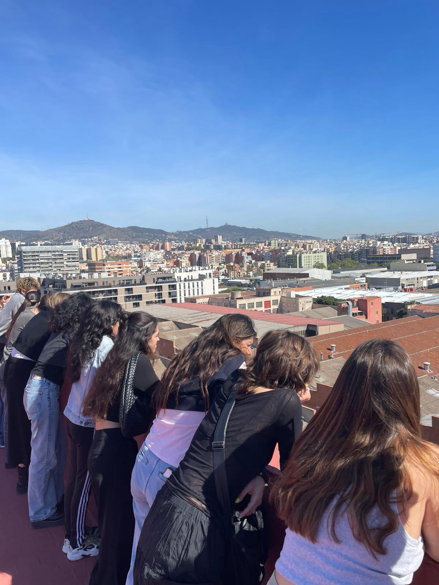
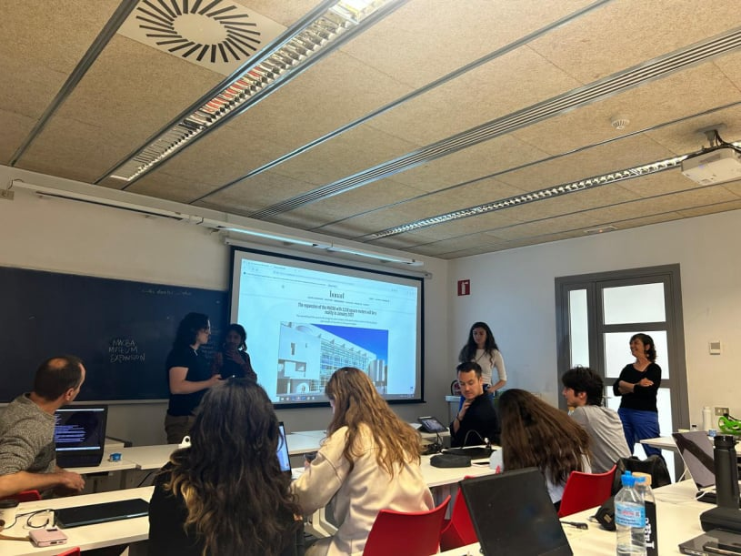

Offline Website MakerDesigning from within our context means creating solutions, products, or systems that are tailored to and influenced by the specific circumstances, culture, environment, and needs of the context in which they will be implemented or used. This approach acknowledges that every context is unique, with its own set of challenges, constraints, resources, and cultural nuances.

Designing from within our context involves:
1. Understanding the context: This includes researching and gaining insights into the environment, culture, social dynamics, economic conditions, and other factors that define the context.
2. Identifying needs and challenges: Through observation, interviews, and other research methods, designers seek to understand the needs, problems, and aspirations of the people within the context.
3. Co-creation with stakeholders: Involving stakeholders such as end-users, community members, and local experts in the design process ensures that solutions are relevant, acceptable, and sustainable within the context.
4. Adaptation and customization: Rather than imposing preconceived solutions, designers adapt their approaches to fit the specific context, taking into account factors such as local materials, traditions, and available resources.
5. Empowering local capacity: Designing from within the context often involves building the capacity of local communities or organizations to continue innovating and solving problems on their own, fostering long-term sustainability.
"My natural science colleagues-and for that matter myself and my colleagues in general— have a tendency to think that apparatuses and terminologies like, for example, climate change are going to be translatable somehow to all parts of the world, even if the phenomena in question are experienced differently." D.H.
Human Exceptionalism
“The sciences of the Anthropocene are too much contained within restrictive systems theories and within evolutionary theories called the Modern Synthesis, which for all their extraordinary importance have proven unable to think well about sympoiesis, symbiosis, symbiogenesis, development, webbed ecologies, and microbes.” D.H.
In one way or another, we are all connected and if we think about connection, it changes everything.
Symbiosis
Close relationship between two different kinds of organisms that share the same kind of environment and consequently adapt to learn with each other.
The human body is full of all types of complementary bacteria.
There is no organism on Earth that can live without a symbiotic relationship.
She proposes another name for our era which is not Anthropocene.
Living beings defy neat definitions. At the base of the creativity of all familiar forms of life, symbiosis generates novelty.
Symbiogenesis - when two different organisms from different species merge and there is another organism created.
Implications of a symbiotic world: mess-mates (when everyone shares the same menu and table), sex, infection and eating are old relatives, mortal companion species cannot and must not assimilate one another but must learn to eat well, or at least well enough that care, respect the differences within one another.
Critters
An idiom for creature or creations
Critters do not precede their relatings, they make each other through semiotic material involution, out of beings of previous such entanglements.
I am responsible for some other creature I did not know before.
Involution - not going backwards but unfolding
Individuals - Holobionts
Interaction or inter-actions ; the relation is between two different entities, with dynamic complex systems
Holobiont does not designate host and symbionts because all the players are symbionts to each other, in diverse kinds of relationalities with varying degrees of openness to attachments and assemblages with others.

Barcelona targets world-famous unofficial skate park to end 'monopoly' of skaters. Identity the actors -
- MACBA
- Politicians / Mayors
- Skaters
- Children
- Residents
- General Public
- Local Shops
- Non-human species - plants and animals
What do we need?
- Soil
- Water - how will they be hydrated in the time of a drought - create a specific line or channel for water. Fountains. Create the area around water abundance. Recycle the water. Create a system to convert humidity into water.
- Sunlight
- Space for growth
- Community engagement - space for benches etc and cross pollination
- Not isolated
- Create a rooftop garden
- Integrate the two - skatepark and plants
- If we were plants - we would grow on the top or on the walls, take out the concrete from the floor and grow on new soil
- Make half the area green and half skate
- Have ergonomic park benches
- Vertical garden
- We like the space is open - one rare space in Raval which is not narrow
- The museum should consider natural exhibitions, artists who care about the environment, so people and stakeholders who care about museum visit would also care about the garden outside. Do exhibitions about caring for the plants etc to influence people - enhance people’s consciousness
- Indoor plants
- Nature and plants are a passive way of integrating with both opponents
REFLECTION
Reflecting on the future talk I had on "Symbiosis and Designing Within Our Context," I am struck by the profound impact this topic has on our understanding of sustainable and context-aware design. This talk emphasized the importance of fostering symbiotic relationships between design practices and the environments—both natural and social—in which they exist.
One of the key takeaways from this discussion was the concept of symbiosis as a foundational principle in design. Symbiosis, in this context, refers to mutually beneficial interactions between different entities, highlighting the interconnectedness of all elements within a system. This principle encourages designers to consider how their work can harmonize with and enhance the surrounding environment rather than disrupt or exploit it. This approach is especially critical in addressing contemporary challenges such as climate change, resource depletion, and social inequality.
The talk also underscored the necessity of designing within our specific context, acknowledging that one-size-fits-all solutions are often inadequate. Every community, ecosystem, and cultural setting has unique characteristics and needs that must be respected and integrated into the design process. This perspective fosters a more localized and adaptive approach to design, ensuring that solutions are relevant, sustainable, and culturally sensitive.
During the talk, several examples were presented that illustrated successful symbiotic design practices. These case studies demonstrated how thoughtful design can lead to positive outcomes for both human and natural systems. For instance, designing urban green spaces that promote biodiversity while providing recreational areas for residents exemplifies how human needs and ecological health can be balanced. Similarly, community-driven projects that incorporate local knowledge and traditions show the value of engaging with and learning from the people who are directly affected by design decisions.
Another important aspect discussed was the role of technology and innovation in facilitating symbiotic design. Advances in materials science, renewable energy, and digital tools offer new possibilities for creating designs that are both high-performing and environmentally responsible. However, the talk also highlighted the need for a critical approach to technology, ensuring that its application aligns with ethical principles and long-term sustainability goals.
The future-oriented nature of the talk prompted reflections on how designers can proactively shape a more harmonious and sustainable world. It called for a shift in mindset from linear, extractive models to circular, regenerative ones. This involves rethinking resource use, waste management, and lifecycle impacts to create systems that support continuous renewal and balance.
In conclusion, the talk on "Symbiosis and Designing Within Our Context" was a deeply insightful experience that reinforced the importance of contextual and symbiotic thinking in design. It challenged me to consider how my own design practices can contribute to a more sustainable and equitable future by fostering positive relationships between humans, their communities, and the broader environment. The principles and ideas discussed will undoubtedly influence my approach to design, guiding me toward more thoughtful, responsible, and impactful work.
Offline Website Maker